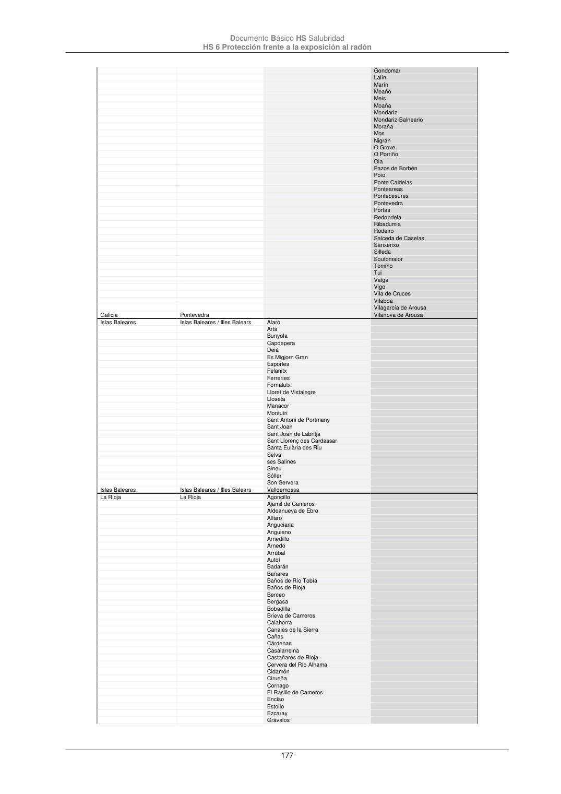

DB-HS Salubridad · edición 2022-06-14 · capa oficial
Documento DB-HS-oficial · SHA-256 del PDF 68df3caacc95f71aee2ec1ba7b2c65ae66155c21e3a8785521b8fdd4fd640d3b
Página física 177 de 184.
Copia fiel del PDF fuente · Fuente oficial
Ficha de la disposición en la fuente oficial
Formato: Texto de la página (Markdown)
Documento Básico HS Salubridad HS 6 Protección frente a la exposición al radón 177 Gondomar Lalín Marín Meaño Meis Moaña Mondariz Mondariz-Balneario Moraña Mos Nigrán O Grove O Porriño Oia Pazos de Borbén Poio Ponte Caldelas Ponteareas Pontecesures Pontevedra Portas Redondela Ribadumia Rodeiro Salceda de Caselas Sanxenxo Silleda Soutomaior Tomiño Tui Valga Vigo Vila de Cruces Vilaboa Vilagarcía de Arousa Galicia Pontevedra Vilanova de Arousa Islas Baleares Islas Baleares / Illes Balears Alaró Artà Bunyola Capdepera Deià Es Migjorn Gran Esporles Felanitx Ferreries Fornalutx Lloret de Vistalegre Lloseta Manacor Montuïri Sant Antoni de Portmany Sant Joan Sant Joan de Labritja Sant Llorenç des Cardassar Santa Eulària des Riu Selva ses Salines Sineu Sóller Son Servera Islas Baleares Islas Baleares / Illes Balears Valldemossa La Rioja La Rioja Agoncillo Ajamil de Cameros Aldeanueva de Ebro Alfaro Anguciana Anguiano Arnedillo Arnedo Arrúbal Autol Badarán Bañares Baños de Río Tobía Baños de Rioja Berceo Bergasa Bobadilla Brieva de Cameros Calahorra Canales de la Sierra Cañas Cárdenas Casalarreina Castañares de Rioja Cervera del Río Alhama Cidamón Cirueña Cornago El Rasillo de Cameros Enciso Estollo Ezcaray Grávalos

Datos candidatos: compruebe celdas y notas en el PDF.